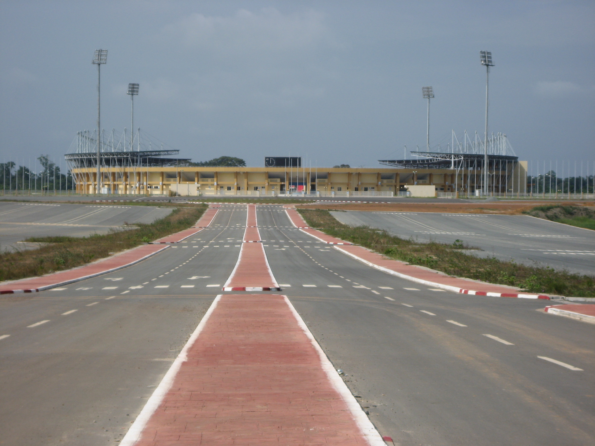
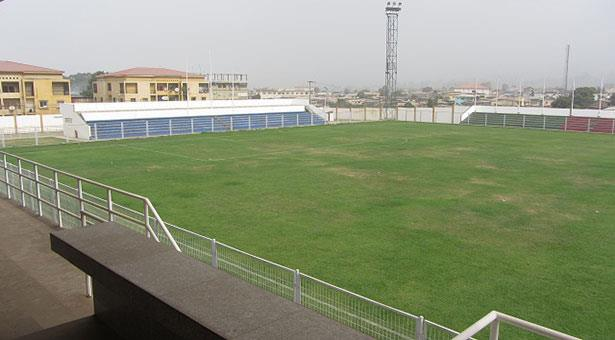
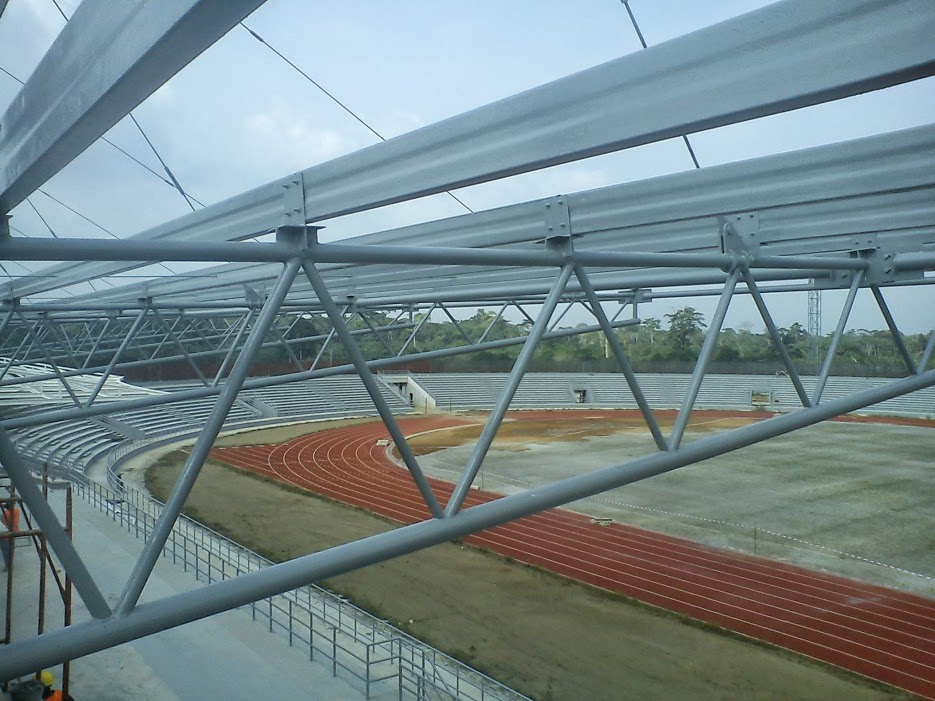
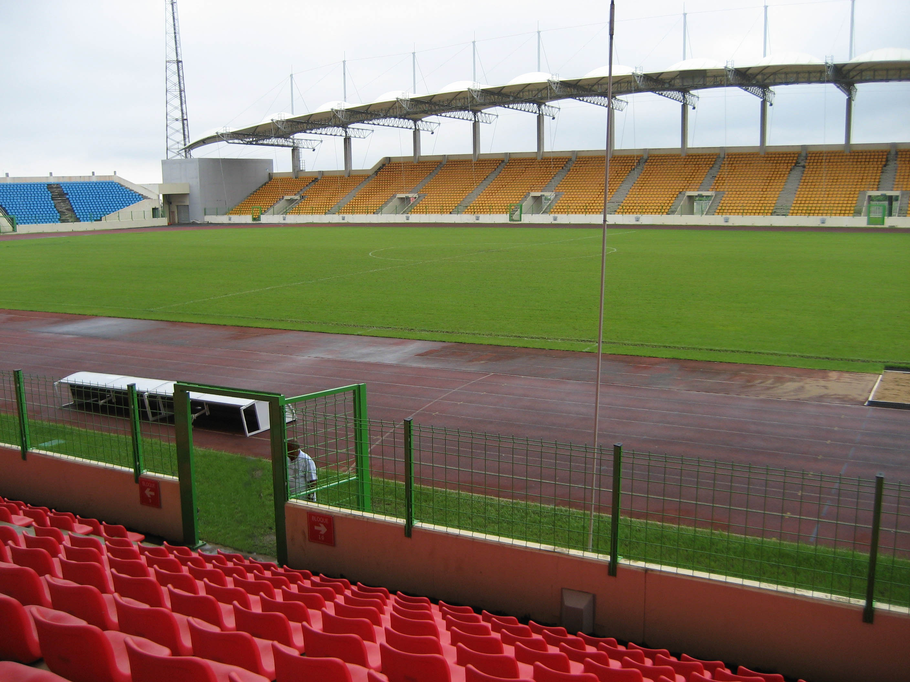

|  | Le plus grand stade du pays et l’un des plus modernes d’Afrique avec 40 000 places couvertes. Construit en 2007 pour la Coupe d'Afrique des Nations feminine 2008, il a été agrandit et modernisé en 2012 pour la CAN avec notamment une demi-finale Zambie – Ghana. |
|  | Son stade est tout neuf, moderne mais petit à la dimension de la ville, puisqu’il ne peut accueillir que 5 000 spectateurs. Les finales des coupes nationales hommes et femmes y ont été disputées cette année. |
|  | Situé dans la ville natale du président Obiang, son stade est tout aussi petit, puisqu’il ne peut accueillir que 4 000 personnes. |
|  | Situé dans la capitale de la Guinée Equatoriale, sur l’ile de Bioko, le stade Nuevo Estadio de Malabo a été construit en 2007 par Bouygues. Il peut accueillir 15 000 personnes. Il est doté de deux tribunes couvertes. Il a été hôte de 8 matchs de la CAN 2012 dont la petite finale. |